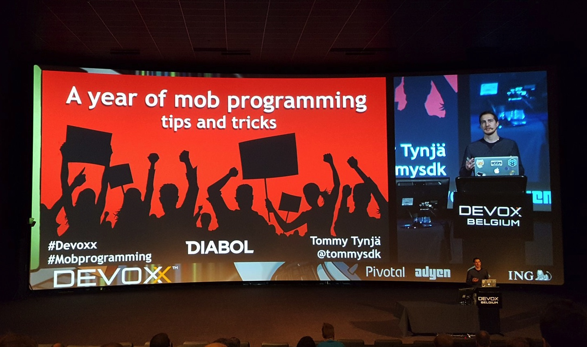

Software engineering and leadership

I'm an Engineering Leader working on global scale consumer products. I build engineering organizations that scale with the business to deliver user value and drive business metrics.
With 20 years of experience in software engineering and technical leadership, I’ve worked on some of the world’s most well-known consumer tech products to launch, grow, scale and operate successfully at global scale. My leadership has powered launches across 80+ new markets, delivered one of the largest localization efforts in the industry, and ensured billions of messages reach over 751 million monthly active Spotify users across email, push, in-app marketing messaging, the Your Updates notifications hub, WhatsApp, and SMS.
Whether navigating hyper-growth or leading through constraints, I specialize in:
At Spotify I have led the Messaging Platform and Tooling organization for three years. Previously, I led growth engineering efforts that delivered the largest market expansion and localization launch in Spotify history (launching 36 new languages in one go), while solving product-market fit problems in growth markets.
In my software engineering career, I've specialized in developing quality software running on the Java platform. Among things, I have refactored the thread pool executor of a popular open source application server, found unspecified behaviors in the Enterprise Java Beans specification and contributed to many popular Apache sponsored open source projects over the years. I'm an advocate of open source software, test-driven development, cloud computing, automation and tools that boost developer productivity and get software shipped faster. I've used those technologies to design, architect, engineer and deploy resilient and scalable systems capable of dealing with high load and low latency requirements.
I speak regularly at international software conferences (Devoxx, JavaOne, Jfokus, Flowcon). I've also held software engineering lectures at the Royal Institute of Technology. Co-founder of the Continuous Delivery Stockholm user group which has over 1000 members.
Contributed to various open source projects during my spare time, such as the Arquillian integration-testing framework, its sister project ShrinkWrap and the Apache TomEE application server. Committer and maintainer of the Jenkins Delivery Pipeline plugin for 5 years, with over 9000 known installations world-wide, providing bug and security fixes, feature development, documentation and community support. Also made minor contributions to JBoss Application Server, Apache Cassandra and Apache Commons Beanutils. Arctic Code Vault contributor.
Let’s connect if you're tackling engineering challenges at scale - be it growth, platformization, or org design.